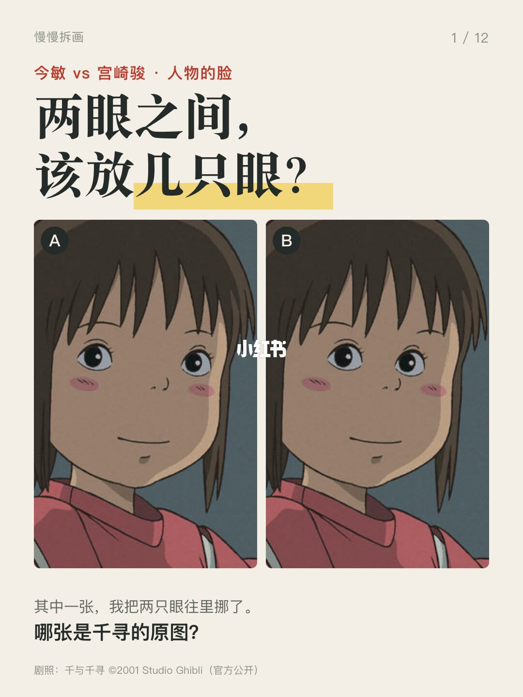
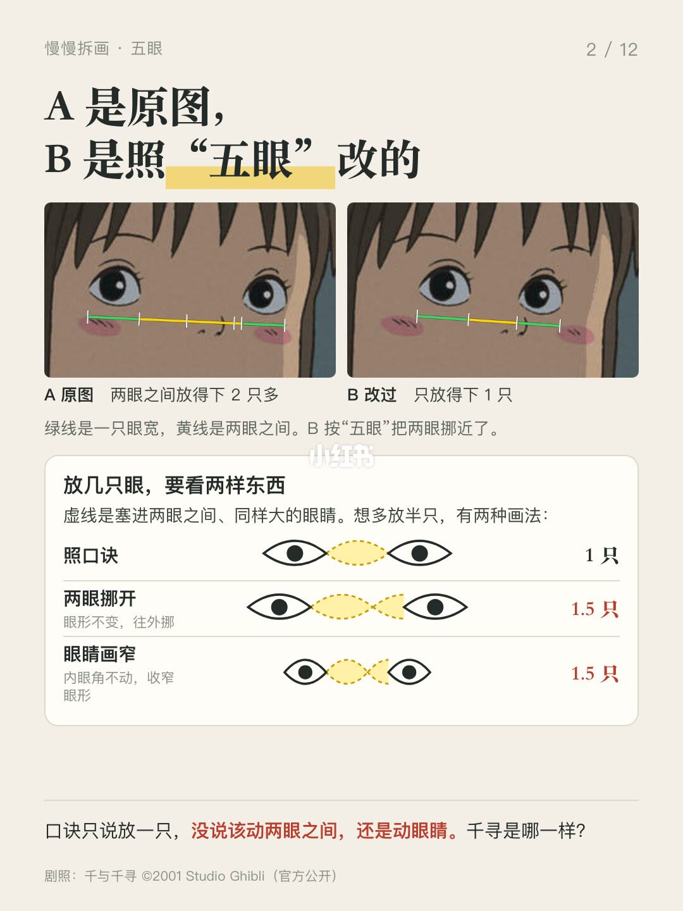
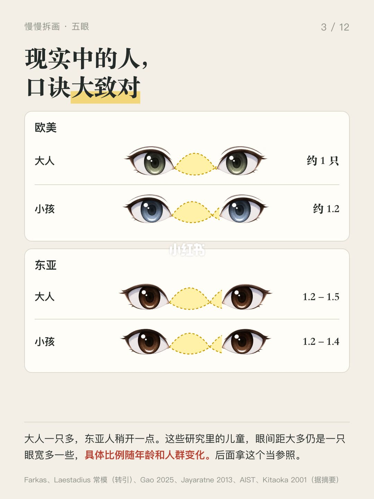
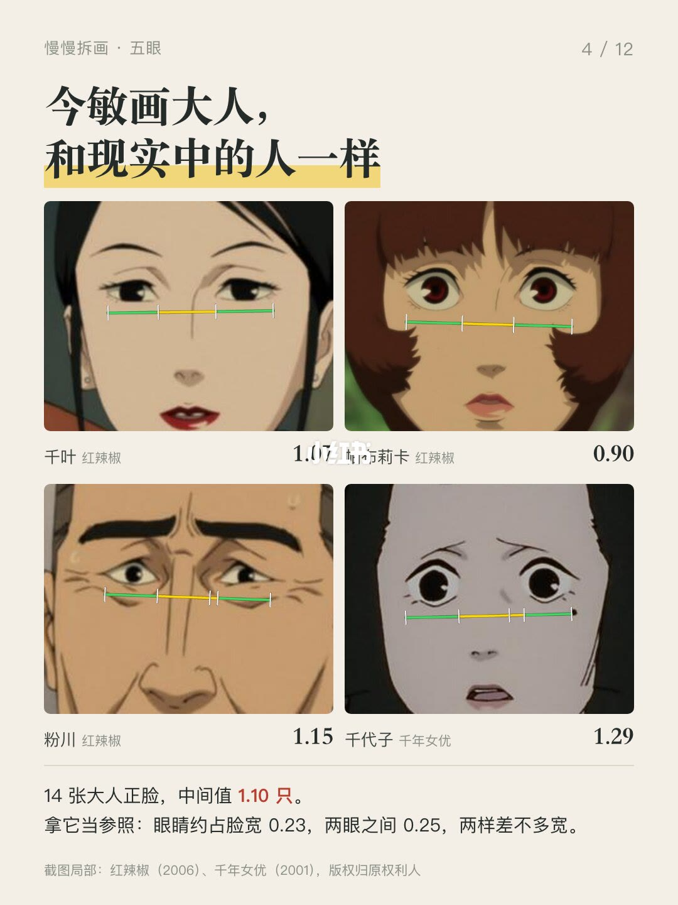
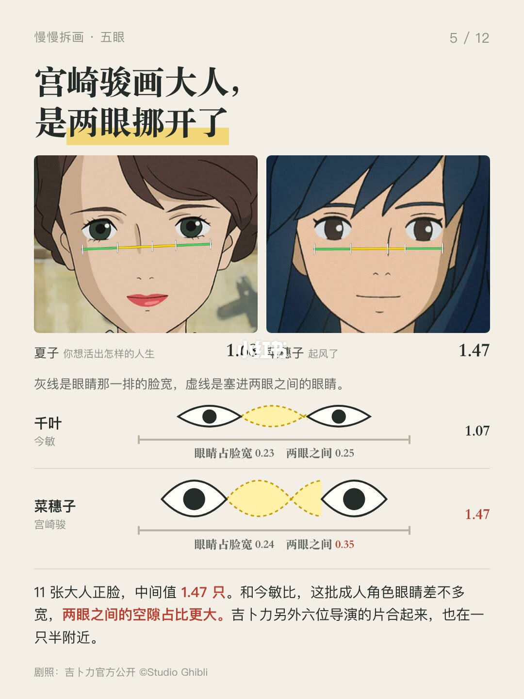
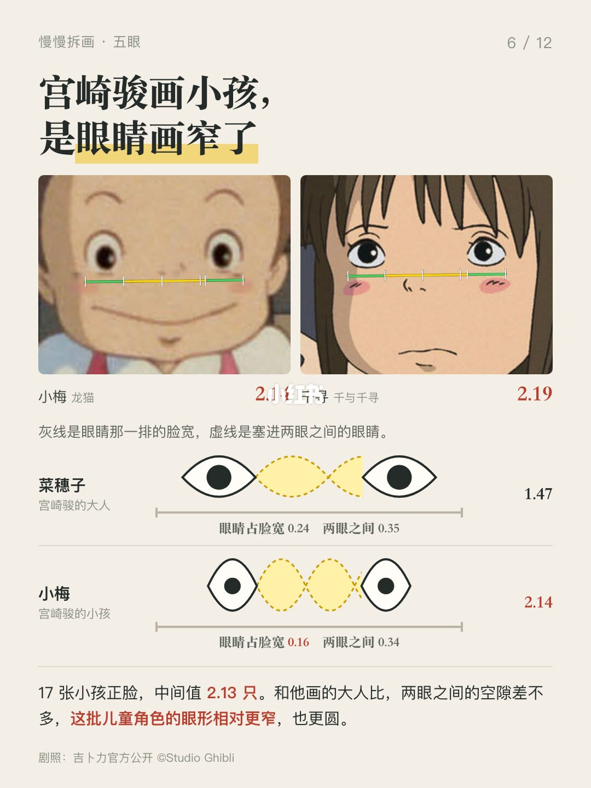
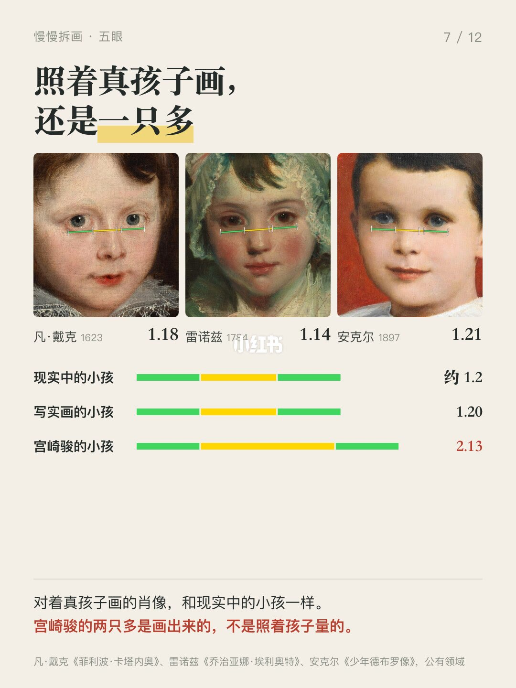
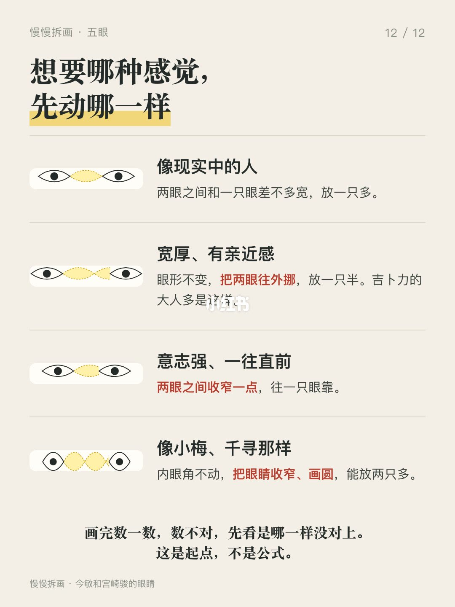

内容要点
先猜猜封面哪张是千寻的原图，答案在第 2 页。外面常说的口诀“五眼”说脸横着正好五只眼宽，两眼之间占一只。千寻的两眼之间放得下两只多，看着却一点不怪。 放几只眼，其实是两样东西相除：两眼之间有多宽，除以一只眼有多宽。数变大，可能是两眼挪开了
知识结构
先猜猜封面哪张是千寻的原图，答案在第 2 页。外面常说的口诀“五眼”说脸横着正好
先猜猜封面哪张是千寻的原图，答案在第 2 页。外面常说的口诀“五眼”说脸横着正好
先猜猜封面哪张是千寻的原图，答案在第 2 页。外面常说的口诀“五眼”说脸横着正好
- 先猜猜封面哪张是千寻的原图，答案在第 2 页。外面常说的口诀“五眼”说脸横着正好五只眼宽，两眼之间占一只。千寻的两眼之间放得下两只多，看着却一点不怪。 放几只眼，其实是两样东西相除：两眼之间有多宽，除以一只眼有多宽。数变大，可能是两眼挪开了，也可能是内眼角不动、眼睛收窄了。 现实中的人，欧美大人差不多正好一只，东亚人稍开一点；研究里的小孩大多也是一只多。今敏画大人 1.1 只，和现实中的人一样。宫崎骏画大人一只半，眼睛和今敏差不多宽，两眼之间的空隙占得更多。到了小孩两只多，空隙和他画的大人差不多，眼形更窄。照着真孩子画的肖像，还是 1.2 只。 为什么这样画？给《千年女优》做人物设计的本田雄说，今敏要的是写实，同时线要少。吉卜力那边，眼距本来就是调性格的开关：动画师稻村武志教画龙猫时说，把眼睛的位置拉开会显得宽厚；石井朋彦回忆宫崎骏讲过，两眼分得开反而更有亲近感，我拿巴斯和希达量了一下，同一个镜头里希达的两眼之间更开一点。至于孩子，画法书说婴儿眼皮开口窄，两眼看起来比大人分得开。 达·芬奇写过两眼之间放一只眼，“三庭五眼”四个字连用，我找到最早的是 2000 年以后的教
先猜猜封面哪张是千寻的原图，答案在第 2 页。外面常说的口诀“五眼”说脸横着正好五只眼宽，两眼之间占一只。千寻的两眼之间放得下两只多，看着却一点不怪。 放几
1/12–4/12封面/要点：先猜猜封面哪张是千寻的原图，答案在第
先猜猜封面哪张是千寻的原图，答案在第 2 页。外面常说的口诀“五眼”说脸横着正好五只眼宽，两眼之间占一只。千寻的两眼之间放得下两只多，看着却一点不怪。 放几只眼，其实是两样东西相除：两眼之间有多宽，除以一只眼有多宽。数变大，可能是两眼挪开了，也可能是内眼角不动、眼睛收窄了。 现实中的人，欧美大人差不多正好一只，东亚人稍开一点；研究里的小孩大多也是一只多。今敏画大人 1.1 只，和现实中的人一样。宫崎骏画大人一只半，眼睛和今敏差不多宽，两眼之间的空隙占得更多。到了小孩两只多，空隙和他画的大人差不多，眼形更窄。照着真孩子画的肖像，还是 1.2 只。 为什么这样画？给《千年女优》做人物设计的本田雄说，今敏要的是写实，同时线要少。吉卜力那边，眼距本来就是调性格的开关：动画师稻村武志教画龙猫时说，把眼睛的位置拉开会显得宽厚；石井朋彦回忆宫崎骏讲过，两眼分得开反而更有亲近感，我拿巴斯和希达量了一下，同一个镜头里希达的两眼之间更开一点。至于孩子，画法书说婴儿眼皮开口窄，两眼看起来比大人分得开。 达·芬奇写过两眼之间放一只眼，“三庭五眼”四个字连用，我找到最早的是 2000 年以后的教




5/12–8/12第5/12页：五眼是真的吗？看看今敏和宫崎骏怎么
先猜猜封面哪张是千寻的原图，答案在第 2 页。外面常说的口诀“五眼”说脸横着正好五只眼宽，两眼之间占一只。千寻的两眼之间放得下两只多，看着却一点不怪。 放几只眼，其实是两样东西相除：两眼之间有多宽，除以一只眼有多宽。数变大，可能是两眼挪开了，也可能是内眼角不动、眼睛收窄了。 现实中的人，欧美大人差不多正好一只，东亚人稍开一点；研究里的小孩大多也是一只多。今敏画大人 1.1 只，和现实中的人一样。宫崎骏画大人一只半，眼睛和今敏差不多宽，两眼之间的空隙占得更多。到了小孩两只多，空隙和他画的大人差不多，眼形更窄。照着真孩子画的肖像，还是 1.2 只。 为什么这样画？给《千年女优》做人物设计的本田雄说，今敏要的是写实，同时线要少。吉卜力那边，眼距本来就是调性格的开关：动画师稻村武志教画龙猫时说，把眼睛的位置拉开会显得宽厚；石井朋彦回忆宫崎骏讲过，两眼分得开反而更有亲近感，我拿巴斯和希达量了一下，同一个镜头里希达的两眼之间更开一点。至于孩子，画法书说婴儿眼皮开口窄，两眼看起来比大人分得开。 达·芬奇写过两眼之间放一只眼，“三庭五眼”四个字连用，我找到最早的是 2000 年以后的教



9/12–12/12第9/12页：五眼是真的吗？看看今敏和宫崎骏怎么
先猜猜封面哪张是千寻的原图，答案在第 2 页。外面常说的口诀“五眼”说脸横着正好五只眼宽，两眼之间占一只。千寻的两眼之间放得下两只多，看着却一点不怪。 放几只眼，其实是两样东西相除：两眼之间有多宽，除以一只眼有多宽。数变大，可能是两眼挪开了，也可能是内眼角不动、眼睛收窄了。 现实中的人，欧美大人差不多正好一只，东亚人稍开一点；研究里的小孩大多也是一只多。今敏画大人 1.1 只，和现实中的人一样。宫崎骏画大人一只半，眼睛和今敏差不多宽，两眼之间的空隙占得更多。到了小孩两只多，空隙和他画的大人差不多，眼形更窄。照着真孩子画的肖像，还是 1.2 只。 为什么这样画？给《千年女优》做人物设计的本田雄说，今敏要的是写实，同时线要少。吉卜力那边，眼距本来就是调性格的开关：动画师稻村武志教画龙猫时说，把眼睛的位置拉开会显得宽厚；石井朋彦回忆宫崎骏讲过，两眼分得开反而更有亲近感，我拿巴斯和希达量了一下，同一个镜头里希达的两眼之间更开一点。至于孩子，画法书说婴儿眼皮开口窄，两眼看起来比大人分得开。 达·芬奇写过两眼之间放一只眼，“三庭五眼”四个字连用，我找到最早的是 2000 年以后的教

口述/画面要点（12段）
结合 Whisper medium 与画面大字整理；专有名词已校对。
封面/要点：先猜猜封面哪张是千寻的原图，答案在第 2 页。外面常说的口诀“五眼”说脸横着正好
第2/12页：五眼是真的吗？看看今敏和宫崎骏怎么画
第3/12页：五眼是真的吗？看看今敏和宫崎骏怎么画
第4/12页：五眼是真的吗？看看今敏和宫崎骏怎么画
第5/12页：五眼是真的吗？看看今敏和宫崎骏怎么画
第6/12页：五眼是真的吗？看看今敏和宫崎骏怎么画
第7/12页：五眼是真的吗？看看今敏和宫崎骏怎么画
第8/12页：五眼是真的吗？看看今敏和宫崎骏怎么画
第9/12页：五眼是真的吗？看看今敏和宫崎骏怎么画
第10/12页：五眼是真的吗？看看今敏和宫崎骏怎么画
第11/12页：五眼是真的吗？看看今敏和宫崎骏怎么画
第12/12页：五眼是真的吗？看看今敏和宫崎骏怎么画